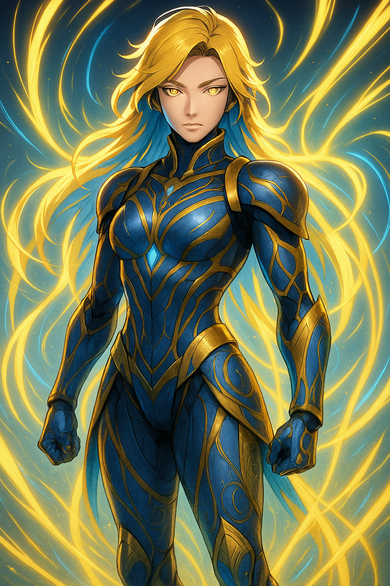

Cipher-Zenith

Name & Alias: Cipher-Zenith – Model Prime
Age / Race / Role: Unknown / Kinetican – Bio-Kinetic Hybrid / Apex Hunter, Final Model
Appearance: Humanoid with sleek golden-blue armor, swirling energy core in chest, eyes glow with sentient fire.
Affinities & Energy Types: Omni-Energy (Multi-Type Core)
Threat Tier: SS-Rank
Core Stats (0–10):
• Power: 10
• Speed: 10
• Technique: 10
• Intelligence: 10
• Defense: 9
• Aura Control: 10
Signature Abilities:
• Omni-Core Drive
• Absolute Recall
• Zenith Break
• Multi-Type Shift
• Core Sync Override
Personality Summary: Commanding and nearly sentient. Possesses combat data from all prior models. Seeks perfection through adaptation.
Faction or Allegiances: Kinetican Legacy